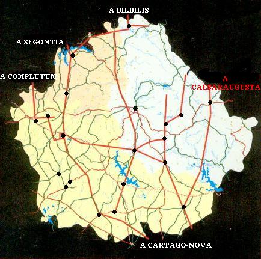
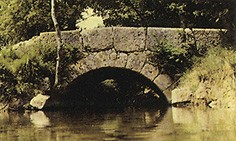
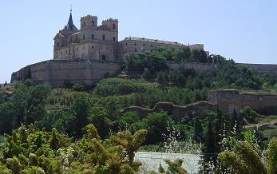

-
Su primitivo nombre se baraja entre
Anitorgis,
Sucro y
Concava, aunque no hay
ningún rastro fiable que así lo pruebe.
Se ha afirmado que por las tierras de Cuenca pasaron los concanos, los
lobetanos, y las legiones del Imperio Romano que dejaron huella de
su paso por Cuenca, con un pequeño puente romano sobre el río Moscas y una
fuentecilla; y por su provincia.
-
-
Segóbriga -
Ercávica - Valeria
-
Noheda
-
-
Con la
conquista de estas tierras llevada a cargo por Tiberio Sempronio Graco
en el año 179 a.e.c., la romanización dejó sus huellas en
Cuenca. La riqueza de la
tierra, y las posibilidades de explotación económica fueron
el móvil que condujo al pueblo romano hasta ellas.
-
-
-
VÍAS ROMANAS
-
- A través del estudio de las fuentes
antiguas, "Itinerario de Antonino", "Anónimo de Ravena" y "los vasos de
Vicarello", y del estudio de campo; se ha podido localizar las red de vías
que discurrían por Cuenca. Había una vía principal entre Segontia y
Ercávica, con dos ramales, uno a Segóbriga por Alcázar del Rey, y otro a
Villas Viejas por Carrascosa del Campo. Ambos ramales se vuelven a unir en
uno en Villarejo de Fuentes y de allí a Alconchel, Villar de la Encina,
Santa Mª del Campo Rus, Perona, Villar de Cantos, Vara del Rey y
Pozoamargo, (Puteis), mansión con pozos, se dirige a través de las
provincias de Albacete y Murcia a Cartagena. Otro ramal viene desde
Complutum (Alcalá de Henares), pasando por Leganiel, Barajas de Melo,
Ermita de Riansares y Uclés llegando a Segóbriga, donde enlaza con la
anterior. Otros ramales menores unen esta calzada con la provincia de
Toledo y Ciudad Real, uno parte desde Pozoamargo y otro desde Uclés por
Acebrón. Otra vía principal es la que comunica Laminio (lagunas de Ruidera)
importante cruce de caminos donde se unen la vía de Mérida, Jaén, Córdoba
y las que van a Zaragoza y Valencia.
- Desde Saltigi (Chinchilla,
Albacete), esta vía subiría por Villagarcía del Llano y entre Ledaña e
Iniesta se situaría Ad Putea, (junto a los Pozos) una mansión para el
descanso en el camino que seguramente seria un ligar para beber agua y
descansar. Después seguiría por Almodóvar del Pinar, en donde se
bifurcaría el camino para ir a Zaragoza por dos caminos diferentes:
- - Uno citado en el
itinerario de Antonino con las siguientes mansiones, Valebonga (Reillo?),
Urbiaca (Cañete o Villar de Domingo García?) y por Teruel a Zaragoza.
- - Otro que iría por Chumillas a Valeria y desde allí por Tórtola, Villar de Olalla,
Albadalejito, Chillarón, Noheda, Sacendoncillo, Torralba, Albalate, Priego,
Alcantud, Carrascosa de la Sierra, por Guadalajara a Zaragoza.
- Hay otros caminos secundarios que unen
otras zonas entre sí: Uno enlazaría Huete con la calzada que pasaría por
Villar de Olalla, otro enlazaría Segóbriga con Valeria, otro uniría
Iniesta con Pozoamargo.
- A parte de los pueblos más conocidos,
existen otros pueblos que guardan relación con la romanización de Cuenca;
y podéis hallar restos de ellos o referencias en el museo de Cuenca.
(Obispo Valero nº 6).
-
-
Abadía de la
Obispalia.
Alcázar del Rey.
Arguisuelas.
Carboneras.
Carrascosa del Campo.
Castillejo del Romeral.
Culebras.
El Acebrón.
Huete.
Iniesta.
La Hinojosa.
La Melonga.
Mohorte.
Montalbo.
|
-

|
-
Reillo.
Salvacañete.
Tarancón.
Tebar.
Tortola.
Villaescusa de Haro.
Villamayor de Santiago.
Villar de Fuentes.
Villar de Olalla.
Villar del Humo.
Villarejo de Fuentes.
Villas Viejas.
|
-
-
MILIARIOS
-
En cuenca se han hallado varios miliarios, la mayoría
pertenecen a la vía de Complutum a Cartago-nova (Alcalá de
Henares-Cartagena). De algunos de ellos solo se conservan referencias
bibliográficas, pero otros se conservan más o menos completos, tres en
Segóbriga, el de Huelves, el de Alconchel. Otros como en Valeria, aunque
ya desaparecidos, resta uno sin inscripción muestran la particularidad de
aparecer en grupo, fenómeno normal en las proximidades de una ciudad. Es
digno de mención el de Peña escrita, más que un miliario es una
inscripción en la roca junto al río Gabriel por cuya hoz corre la vía
durante unos kilómetros, La inscripción hace referencia a un arreglo que
Iulios Celsus ordenó realizar de 8.000 pasos (11km.). Otros como el de
Fuentelespino han aparecido con una cruz encima, muestra de su uso
continuado. Hay otros fragmentados o sin inscripción como el de Ercávica o
Villar de la Encina.
|
-
-
Algunos de los pueblos de Cuenca en
los que se han hallado restos romanos:
-
-
ALARCÓN
-
El cerro sobre el
que se asienta la población parece haber estado habitado
desde la prehistoria. Conquistada por los romanos, siendo convertida en
fortaleza por los árabes. La denominación actual es árabe: Alarcón
significa "La Fortaleza". De
época romana destaca la vía secundaria romana. Desde Alarcón, discurría
por la Losa, llegaba hasta La Roda donde se unía con la vía que partiendo
de Complutum y llegaba hasta Cartago Nova.
-
-
ALBENDEA
-
La Ermita Mausoleo de Llanes fue un mausoleo romano de mediados o
finales del siglo IV que con posterioridad adquirió distintos usos. El
mausoleo estaba vinculado a una villa romana de la que formaba
parte y cuyos restos se hallan en los campos de cultivo adyacentes.
-
-
ALBERCA DE
ZANCARA
-
Por
la población pasa la calzada romana que unía Complutum con Cartago Nova,
junto a la fuente del Pilar. Fuente de origen romano.
-
ALCALÁ DE LA VEGA
-
En Alcalá de la Vega existen vestigios
ibéricos, romanos, visigodos. Restos de calzadas romanas, que hace pensar
en la XXXI Vía Romana o Camino de Antonino, tumbas y crismones visigodos.
Se ha hallado una moneda de Tiberio y otra de Graciano. En los alrededores del castillo árabe de
Alcalá, merecen muy especial atención los vestigios visigodos donde se han
hallado numerosas estelas funerarias.
-
-
ARGUISUELAS
-
Los romanos, al saber que la
habitaron griegos, tradujeron ARCHESELA en ARGIVORUM SELLA, silla o mansión de los
griegos. Así quedó Arguisuelas. No se han realizado excavaciones
arqueológicas, pero se han encontrado por particulares algunas monedas
alrededor del llamado Cerro de la Cava.
-
-
BARCHÍN DEL HOYO
-
A 1 Km. de la Villa se llega al paraje
denominado Fuente de la Mota. Allí en el cerro llamado Plaza de los Moros
se ha escavado un poblado de la edad del hierro, y según los arqueólogos
posiblemente fue destruido por Aníbal a finales del S. III a.e.c.
En el cerro del Tesorillo existen ruinas romanas. Se encontraron un
tesorillo compuesto por alguna moneda romana de Julio Cesar y otras sin
definir, aunque posiblemente romanas, 17 de oro y 157 de plata.
-
-
BELMONTE
-
En el término municipal se han localizado numerosos
restos arqueológicos. Carta Arqueológica de Belmonte: En
los Yesares y en el cerro de las Ánimas o de San Isidro se han hallado
restos de la Edad del Bronce. En la zona de “La Moraleja” se localizan los
restos de una villa romana, transformada a lo largo de los años, bajo la
construcción actual se hallan los restos de la villa romana. En “La Manosola” también se localizan los restos de una villa romana sin excavar.
De época romana también son las minas de Lapis Specularis llamadas “Las
Horadadas”, en el límite con el término de Villaescusa de Haro.
-
De época visigoda hay
constancia de una Necrópolis en la Senda Alta o de las Vacas. Y al
realizar unas excavaciones en 1976, debajo del ábside de la Iglesia,
aparecieron los restos de un crismón del siglo V y los cimientos de una
iglesia visigoda.
-
En 2014 durante la
restauración del palacio del Infante D. Juan Manuel, ha aparecido un horno
romano, cerámica y un pozo de la misma época. Entre Belmonte y Monreal del
Llano también hay un poblado romano en la zona llamada “La Torrecilla”,
sin escavar.
-
Información facilitada por
Miguel Ángel V.
-
-
BETETA
-
En el paraje conocido como Los
Castillejos, existen restos de un poblado celtíbero. Los romanos
explotaron sus salinas
-
-
CUEVA DEL HIERRO
-
El hierro de las minas de Cueva del
Hierro, considerado por ellos uno de los mejores de Hispania. Para
su transporte hicieron un ramal de vía romana que cruzaba el bello
paraje de Huerta Bellida. La historia del pueblo se haya
directamente ligada a la historia de la mina, el nombre del pueblo
deriva del aprovechamiento de la mina de hierro. Celtíberos y
romanos fueron los primeros pobladores de estos terrenos al
considerarlo un importante centro de interés debido a la abundante
presencia del hierro; prueba de ello es la existencia de varias
calzadas romanas en el término municipal del pueblo.
-
-
EL CAVAÑETE
-
En diciembre de 2015 se han hallado los restos de unas termas romanas
datadas entre los siglos I y III.
-
EL PICAZO
-
Puente de origen romano asociado a la vía secundaria romana que partía de
Alarcón. La población se fue afincando a ambos lados de la vía romana. De
época romana existían en la calle del Pintor, unas piedras miliarias con
inscripciones latinas que desaparecieron. También aparecieron restos
romanos al realizar las obras de la presa del embalse de Castillejos que,
desgraciadamente quedaron enterrados bajo la presa. También existía otro
pequeño núcleo de población de la época romana en la finca de la Barga, al
norte de la Boca de la Hoz y desde el que partía una calzada que bajaba
hasta el cauce del río. Los restos del poblado han desaparecido como
consecuencia de las labores de labranza, pero sigue existiendo la calzada
que bajaba hasta el río. Otros restos romanos han aparecido en las
proximidades del puente de San Benito.
-
ENGUIDANOS
-
Existen asentamientos desde la época del
bronce. Los romanos conquistaron esta zona y por
aquí fue lugar de paso entre el Mediterráneo y las zonas mineras de la
meseta, cruzando una vía secundaria este trazado y dejando su impronta en
muchos restos hallados.
-
-
ERCÁVICA
-
-
FRESNADA DE
ALTAREJOS
-
Junto a la central eléctrica de El Castellar, se localiza el puente romano
del siglo V. El puente atraviesa el río Júcar mediante tres tramos de obra
y dos ojos. Por él pasaba una calzada romana que unía Valeria con
Segóbriga.
-
-
FUENTENAVA DE
JÁBAGA
Destaca la fuente romana en
Sotoca. También hay documentación de una calzada romana desaparecida.
Mencionada en 1302 por Fernando IV. También destaca el puente que se
localiza entre esta población y Chillaron de Cuenca.
GARCINARRO
-
El yacimiento de la Cava,
ocupado desde la Edad del Bronce hasta la Edad Media.
-
-
HUELVES
-
En
julio de 2024, salen a la luz restos de un mausoleo romano tras
las obras realizadas en la ermita de Huelves.
-
-
HUERTA DEL MARQUESADO
-
Por aquí discurría la calzada romana
hacia Caesaraugusta.
-
-
HUETE
-
Fue un asentamiento Ibérico, por su tierra
han pasado romanos y visigodos. El complejo minero de las cuevas de
Sanabrio conservan en algunas de sus cavidades muchos tramos de lapis
specularis, dispuestos de forma natural, permitiendo conocer la
disposición del mineral antes de su extracción.
-
-
INIESTA
-
Durante años han ido apareciendo
restos arqueológicos de distintas épocas históricas, datándose aquellos
más antiguos en el período neolítico y la Edad del Bronce. En el año 1995
se procedió a realizar la primera excavación científica desenterrando una
necrópolis ibera conocida con el nombre de Punta del Barrionuevo, por
estar situada al final de la calle con ese nombre. Posteriormente se
excavó otra necrópolis ibérica donde apareció uno de los mosaicos de
cantos pintados más antiguos de todos cuantos se conocen en el arco
mediterráneo. De la época de la Romanización los restos encontrados son
variados y de máxima calidad: un puente, varias estelas, aras votivas,
restos de villas romanas, monedas, etc., considerándose por una mayoría de
historiadores como la antigua Egelasta, y consiguiendo una fama inusual
por la calidad de su sal tan importante para las salazones de esa época
que era extraída de las diferentes minas que existían en la zona.
-
-
LA ALMARCHA
-
Antiguo
poblado celtíbero. El poblado romano se situó a unos centenares de
metros de la actual situación en la zona conocida como "los villares",
donde se han encontrado pesas romanas, trozos de vasijas ..
-
-
LA PESQUERA
-
Se han encontrado restos cerámicos que
van desde finales del Bronce hasta fragmentos de cerámica del periodo
romano.
-
-
LLANES
-
El
Mausoleo de Llanes conocido popularmente como la “ermita de
Llanes”, es en realidad y origen un monumento funerario
edificado en el siglo IV, vinculado a una villa romana de la que
formaba parte y cuyos restos se encuentran dispersos a un
centenar de metros del panteón.
-
-
MOYA
-
Su primer asentamiento data de la Edad
del Bronce. Se han encontrado en Moya monedas romanas que fueron acuñadas
en Bílbilis (Calatayud).
-
-
OSA DE LA
VEGA
-
-
POZOAMARGO
-
Identificada con la mansio Ad Puteas mencionada en el Itinerario de
Antonino. Se conserva un tramo de calzada. La calzada romana que unía
Complutum (Alcalá de Henares) con Carthago Nova (Cartagena).
-
-
PRIEGO
De época romana se cree que es el puente y la vía próxima a él.
Actualmente llamado Puente Liende. Fue reparado en 1632. La calzada romana
venia de Villar de Olalla, y discurría a través de Priego y el Estrecho de
Toriles, en Alcantud, hacia Cañizares. También merece la pena visitar el
puente de la Veguilla.
-
SAN CLEMENTE
-
Poblada desde el Bronce Medido. De época romana destaca el puente romano
de finales del siglo I o comienzos del siglo II, y un tramo de la calzada
romana que proveniente de Murcia y Albacete une San Clemente con La
Alberca de Záncara y Segóbriga.
Es un puente de tres vanos, formado por tres arcos de medio punto y está
construido en piedra caliza. También hay constancia de un miliario de la
vía Segobriga-Carthago Nova que pasaba por el municipio.
-
-
SEGÓBRIGA
-
-
SISANTE
-
Nos encontramos con varias teorías para
explicar su significado:
-
Seis flores. Las raíces son voces
griegas: ex (seis) y ante (flores). Los romanos traducían el ex en sex y
traspasada esta palabra a la castellana seis y omitiendo la "e" resultaría
Sexante, y de ahí Sisante. Por los vestigios encontrados en lo que
hoy es Sisante se puede pensar que en otros tiempos fue la ciudad romana
de Mediolum. Se han encontrado vasijas, paredes de piedra, lápidas
sepulcrales con un marcado acento romano. No cabe duda de que Sisante fue
fundado al menos dos veces.
-
TARANCÓN
Inicialmente los pobladores de origen celtíbero se asentaron en las
inmediaciones del barrio "Castillejo", que más tarde serviría de fuerte en
época romana.
-

|
-
El "Pagus Tarranconensis"
pertenecía a la tierra de Segóbriga y en él se han encontrado
bastantes restos romanos como : el puente Romano de Riánsares
situado en la ermita, por donde pasaba la vía que unía Cartago-Nova
(Cartagena) con Complutum (Alcalá de Henares); en el Palomarejo
(Haza del Cura) había un columbario; en el
Santuario
de Riánsares se recogen basas y capiteles de columnas; en
el Museo Arqueológico de Cuenca existe un ánfora del s. I a.e.c.
encontrada en Tarancón y también diversos restos en los
alrededores de la actual población.
|
-
TEBAR
Destaca el poblado Celtibérico
situado en el cerro de Santa Quiteria.
-
TEJADILLOS
-
En época romana era un centro minero de
pirita y carbón. Es posible que la vía secundaria que pasa por huerta del
marquesado y Valdemeca en dirección a Cesaraugusta, atravesara estas
tierras. Las agua sulfurosas alcanzaron cierta consideración por ser muy
apreciadas por los romanos.
-
-
TORRALBA
-
La mina de Pozalacueva de lapis
specularis
-
-
TORREJONCILLO
DEL REY
-
La mina de la Mora Encantada, yacimiento de yeso especular, en la que
los romanos explotaron el famoso lapis specularis.
-
-
TRESJUNCOS
-
Puente de origen romano. Habitado desde la Edad del Bronce. Conquistado
por los romanos durante las campañas de Gracco (179 a.e.c). Paso obligado
hacia Segóbriga desde las minas de lapis specularis. A mediados del siglo
XIX aparecieron restos de mosaicos, relacionados con una villa agrícola,
que fueron expoliados.
-
TORRALBA
-
Los datos más antiguos que se conocen del
pueblo de Torralba, datan del tiempo de los romanos, quedando ruinas de la
calzada romana que iba desde Mérida a Zaragoza.
-
UCLÉS
Uclés se asocia con la ciudad romana de Ocilis, ciudad donde, en tiempo de
Q. Fulvio Nobilior los romanos tenían grandes almacenes y estaba situado
en la calzada que unía las ciudades de Segóbriga a Contrebia y Complutum.
-

|
- Se encontró una
necrópolis hace años y sus murallas de origen romano aun resisten. En 1880
apareció el fragmento de una inscripción en piedra que se ha traducido
como: " Al Dios Airón lo dedico la familia Usetana del pago oculense Cayo,
Tibino, Crispino"...
- El pueblo tiene algunos restos de
su pasado esplendor, y en el entorno se aprecian otros elementos de su
honda historia, como la "Fuenterredonda", manantial conocido ya en época
prerromana. Ahora queda una estructura circular, construida en tiempos
romanos, con piedras de sillería, y unos quince metros de diámetro.
|
-
VALERIA
-
-
VILLAR DE DOMINGO GARCÍA
(NOHEDA)
-
-
VILLAR DEL HUMO
Las pinturas rupestres agrupadas en una serie de abrigos y parajes
como los de Vallejo Marmalo, Cueva Pintá, Collao del Toro y Peña del
Escrito.
-
|